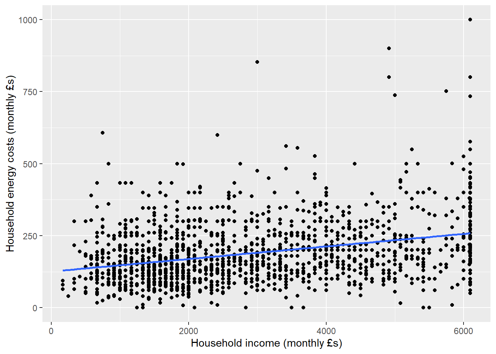
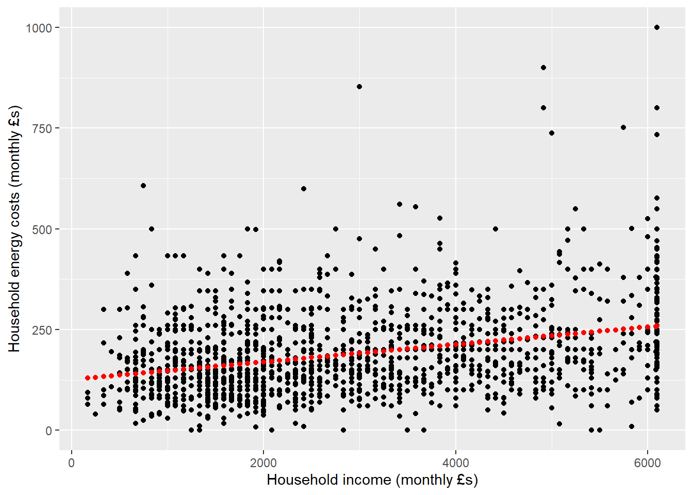
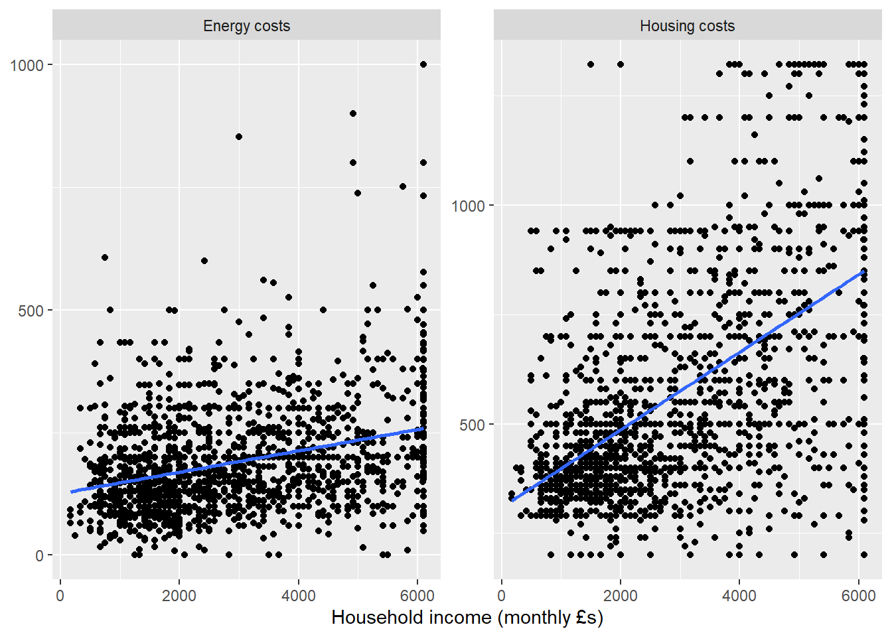
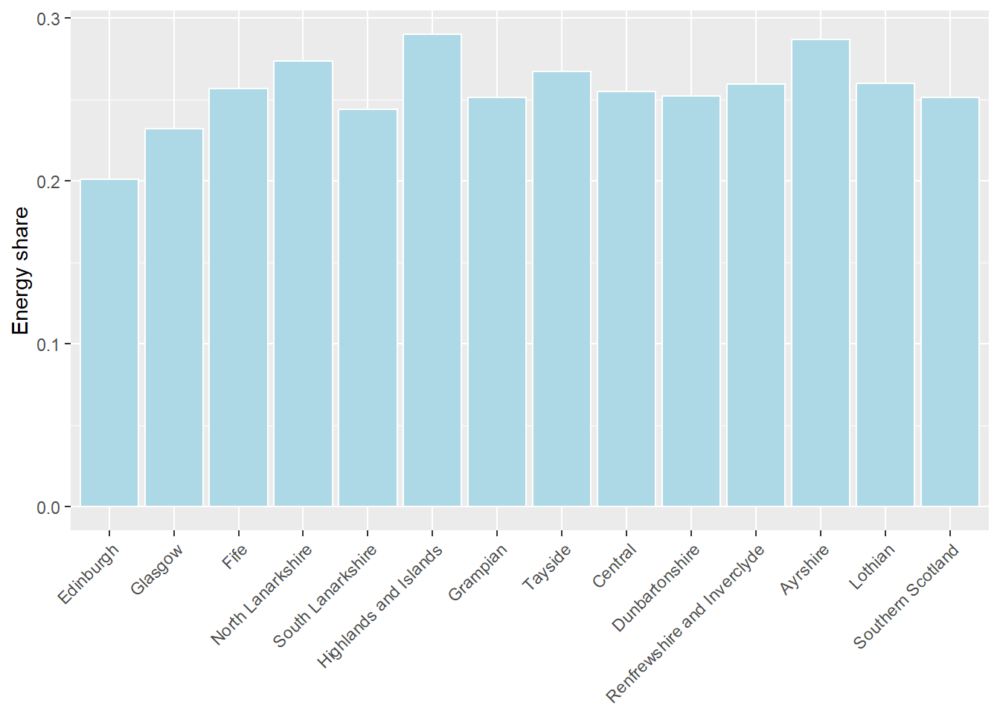

# Title: Econometrics Lab 2: Linear Regression in R
# Author: [INSERT NAME]
# Date: [INSERT DATE]
# ============================================================================ #
# Load libraries
library("haven")
library("dplyr")
library("ggplot2")
# Clear all objects from the R environment
rm(list = ls())
# Set working directory
setwd("[INSERT FILE PATH]/EC3301/Lab 2")
# ============================================================================ #
# Part 1
# ============================================================================ #
# Part 2
# ============================================================================ #Econometrics Lab 2
Linear Regression in R
This lab was motivated by the ongoing “cost of living crisis” that has many politicians, economists, and policy specialists working hard to help households. It focuses on two aspects of this crisis: the cost of energy (part 1) and access to (un)healthy food (part 2). The first part makes use of the Scottish Household Survey (2023) sample from Lab 1, while the second part uses a county level dataset from the US Department of Agriculture.
Setup
Before we get started,
Create a new folder for this week’s lab (“EC3301/Lab 2”) in the same location as your “EC3301/Lab 1” folder.
Go to Moodle and download the datasets provided under Week 4. (You will also need access to the “shs2023.dta” file from Lab 1.)
Move the new files, as well as a copy of “shs2023.dta”, to “EC3301/Lab 2”.
Open RStudio and create a new R script. Save it as “Lab 2/lab-2.R”
Add the following to your R script; editing the file path to match your folder structure. Note, R uses forward slashes (
/) in file paths, even on Windows.
Part 1: Energy costs in Scotland
The Scottish Household Survey (2023) includes information about the amount of money households spend on energy to heat and light their homes (i.e., electricity, gas, etc.). During this lab we will investigate whether lower income households spend a disproportionate amount of money on energy. Why does this matter? Well, if true, it means that energy shocks affect lower income households more.
- Having run the first few lines of the above R script, add the following lines under
# Part 1and run. This is code from Lab 1.
shs <- read_dta("shs2023.dta")
# R should be able to find the file if the working directory (setwd) is set correctly.
shs <- shs %>%
rename(dwell_type = hb1, own_grp = hb509) %>%
mutate(dwell_type = structure(dwell_type, label = "Type of dwelling"),
own_grp = structure(own_grp, label = "Ownership of the dwelling"))
shs$MD20QUIN <- labelled(
shs$MD20QUIN,
labels = c("Bottom: 0-20%" = 1, "Lower: 20-40%" = 2, "Middle: 40-60%" = 3, "Upper: 60-80%" = 4, "Top: 80-100%" = 5))
shs <- shs %>%
mutate(
amt_sum = case_when(
shared_ownership_amt > 0 ~ 3,
mortgage_amt > 0 ~ 2,
rent_amt > 0 ~ 1,
TRUE ~ NA_real_
),
payment = case_when(
amt_sum == 1 ~ as.numeric(rent_amt),
amt_sum == 2 ~ as.numeric(mortgage_amt),
amt_sum == 3 ~ as.numeric(shared_ownership_amt),
TRUE ~ NA_real_
)
)- The dataset includes a set of variables
htcostsum_1-htcostsum_9andhtcostamt_1-htcostamt_9. Try to understand the relationship between each variable by first usingcount()to check the values ofhtcostsum_*and thengroup_by()withsummarise()to check how they relate to the values ofhtcostamt_*. For example,
shs %>% count(htcostsum_1 = as_factor(htcostsum_1))# A tibble: 5 × 2
htcostsum_1 n
<fct> <int>
1 Use, pay separately, amount given 955
2 Use, pay combined with other fuel 1956
3 Use, do not pay for fuel (free/DWP) 9
4 Use, pay separately, amount missing 281
5 <NA> 7295shs %>%
group_by(htcostsum_1 = as_factor(htcostsum_1)) %>%
summarise(
n = sum(!is.na(htcostamt_1)),
mean = mean(htcostamt_1, na.rm = TRUE),
sd = sd(htcostamt_1, na.rm = TRUE),
.groups = "drop"
)# A tibble: 5 × 4
htcostsum_1 n mean sd
<fct> <int> <dbl> <dbl>
1 Use, pay separately, amount given 955 1670. 1205.
2 Use, pay combined with other fuel 0 NaN NA
3 Use, do not pay for fuel (free/DWP) 9 0 0
4 Use, pay separately, amount missing 0 NaN NA
5 <NA> 0 NaN NA Create a variable equal to the sum of all energy costs called
energy_cost. The most accurate way to do this is using therowSums()function (type?rowSumsin the console to learn about the function) along withacross(starts_with("htcostamt_"))to select all the energy cost variables. You will want to add the optionna.rm = TRUEso that missing values are ignored. However,rowSums()will then return a 0 (notNA) for households where all the variables are missing. You will need to recode these toNA. This approach could also have been used to create thepaymentvariable in Lab 1.How many observations have missing, zero, and positive (non-missing values). Check that your output corresponds to mine.
sum(is.na(shs$energy_cost))[1] 7856sum(shs$energy_cost == 0, na.rm = TRUE)[1] 13sum(shs$energy_cost > 0, na.rm = TRUE)[1] 2627shs %>%
summarise(
n = sum(!is.na(energy_cost)),
mean = mean(energy_cost, na.rm = TRUE),
sd = sd(energy_cost, na.rm = TRUE),
min = min(energy_cost, na.rm = TRUE),
p1 = quantile(energy_cost, 0.01, na.rm = TRUE, type = 2),
p5 = quantile(energy_cost, 0.05, na.rm = TRUE, type = 2),
p10 = quantile(energy_cost, 0.10, na.rm = TRUE, type = 2),
p25 = quantile(energy_cost, 0.25, na.rm = TRUE, type = 2),
p50 = quantile(energy_cost, 0.50, na.rm = TRUE, type = 2),
p75 = quantile(energy_cost, 0.75, na.rm = TRUE, type = 2),
p90 = quantile(energy_cost, 0.90, na.rm = TRUE, type = 2),
p95 = quantile(energy_cost, 0.95, na.rm = TRUE, type = 2),
p99 = quantile(energy_cost, 0.99, na.rm = TRUE, type = 2),
max = max(energy_cost, na.rm = TRUE)
)# A tibble: 1 × 14
n mean sd min p1 p5 p10 p25 p50 p75 p90 p95 p99
<int> <dbl> <dbl> <dbl> <dbl> <dbl> <dbl> <dbl> <dbl> <dbl> <dbl> <dbl> <dbl>
1 2640 2376. 1352. 0 240 780 1032 1440 2080 3000 4160 4800 6600
# ℹ 1 more variable: max <dbl>This new variable measures energy costs at an annual level. Transform the variable - using the
mutate()function - to a monthly value. Then label it “Household energy costs (monthly £s)”.Rename
paymenttohousing_costand give it the label “Household housing costs (monthly £s)”. Does the variable have a similar number of non-missing and zero values toenergy_cost? Who would have a housing cost of £0? Wealthier or poorer households?Compare the new
housing_costvariable to the variable in the data calledhcost_amt. You can also useView(select(shs, mortgage_amt, rent_amt, shared_ownership_amt, hcost_amt, housing_cost))to investigate why these two variables are not the same. Should we be concerned?
shs %>%
filter(!is.na(housing_cost) & !is.na(hcost_amt)) %>%
mutate(diff = housing_cost - hcost_amt,
comparison = case_when(
diff < 0 ~ "housing_cost < hcost_amt",
diff == 0 ~ "housing_cost = hcost_amt",
diff > 0 ~ "housing_cost > hcost_amt"
)) %>%
group_by(comparison) %>%
summarise(
n = n(),
min_diff = min(diff),
mean_diff = mean(diff),
max_diff = max(diff),
.groups = "drop"
)
shs %>%
summarise(
n_housing_missing = sum(is.na(housing_cost)),
n_hcost_missing = sum(is.na(hcost_amt)),
n_both_missing = sum(is.na(housing_cost) & is.na(hcost_amt))
)Check
housing_costagainstown_grp(a variable from Lab 1). It is clear that our variable ignores those who own outright or live rent free. Does this seem like a reasonable outcome?Create a new
incomevariable equal toannetinc\(/12\). Label the variable “Household income (monthly £s)”.Keep the sample of observations that have non-missing values for all three variables:
energy_cost,housing_cost, andincome. How many observations do we lose? There are multiple ways you can achieve this result:
- Using base R, select the rows where each variable is not missing. In R, missing values are
NAand you check for them with theis.na()function;!denotes not. (Note,energy_cost != NAwill not work: any comparison withNAreturnsNA.)
shs <- shs[!is.na(shs$energy_cost) & !is.na(shs$housing_cost) & !is.na(shs$income), ]- Using the
filter()function fromdplyr.
shs <- shs %>%
filter(!is.na(energy_cost) & !is.na(housing_cost) & !is.na(income))Create a scatter plot of
energy_costandincomeusingggplot()andgeom_point().Add a second layer to the graph that overlays the scatter plot with a (linear) line of best fit using
geom_smooth(). Here is what the output should look like:

Note, I have used the options method = "lm" to get a linear fit and se = FALSE to turn off the confidence interval.
- The line of best fit corresponds to the OLS estimator. Is the slope significantly different from 0? Based on the estimates, what fraction of an additional £ of income is spent on energy costs.
reg1 <- lm(energy_cost ~ income, data = shs)
summary(reg1)
Call:
lm(formula = energy_cost ~ income, data = shs)
Residuals:
Min 1Q Median 3Q Max
-244.64 -66.84 -19.72 46.84 741.41
Coefficients:
Estimate Std. Error t value Pr(>|t|)
(Intercept) 1.260e+02 5.410e+00 23.28 <2e-16 ***
income 2.176e-02 1.614e-03 13.48 <2e-16 ***
---
Signif. codes: 0 '***' 0.001 '**' 0.01 '*' 0.05 '.' 0.1 ' ' 1
Residual standard error: 103.1 on 1529 degrees of freedom
Multiple R-squared: 0.1062, Adjusted R-squared: 0.1056
F-statistic: 181.7 on 1 and 1529 DF, p-value: < 2.2e-16- Use the
predict()function to create the predicted energy for each householdenergy_hat(see Lecture 2 for assistance). Plot the predicted value alongside the actual value of energy.
ggplot(shs, aes(x = income)) +
geom_point(aes(y = energy_cost)) +
geom_point(aes(y = energy_hat), colour = "red")
- Create a similar graph for
housing_cost. You can combine the graphs into a single figure by stacking the two outcomes into one dataframe and usingfacet_wrap(). Is one slope steeper than the other?
combined <- bind_rows(
shs %>% transmute(income, cost = as.numeric(energy_cost), type = "Energy costs"),
shs %>% transmute(income, cost = as.numeric(housing_cost), type = "Housing costs")
)
ggplot(combined, aes(x = income, y = cost)) +
geom_point() +
geom_smooth(method = "lm", se = FALSE) +
scale_y_continuous(breaks = seq(0, 1500, 500)) +
facet_wrap(~ type, scales = "free_y") +
labs(x = "Household income (monthly £s)", y = NULL)
- Create a new variable
energy_shareequal to energy costs as a share of energy PLUS housing costs. Check that your variable has a similar mean and sd to the output below.
shs %>%
summarise(
n = sum(!is.na(energy_share)),
mean = mean(energy_share, na.rm = TRUE),
sd = sd(energy_share, na.rm = TRUE),
min = min(energy_share, na.rm = TRUE),
max = max(energy_share, na.rm = TRUE)
)# A tibble: 1 × 5
n mean sd min max
<int> <dbl> <dbl> <dbl> <dbl>
1 1531 0.256 0.111 0 0.741- Interpret the slope coefficient and \(\mathbf{R}^2\) from the model below. Use the p-value to test whether the relationship is statistically significant at a \(\alpha = 0.01\) significance level?
# For ln(0) and ln(negative), R returns -Inf/NaN, so set these to NA
shs <- shs %>%
mutate(ln_income = if_else(income > 0, log(income), NA_real_))
reg2 <- lm(energy_share ~ ln_income, data = shs)
summary(reg2)
Call:
lm(formula = energy_share ~ ln_income, data = shs)
Residuals:
Min 1Q Median 3Q Max
-0.26220 -0.07610 -0.01520 0.06826 0.49315
Coefficients:
Estimate Std. Error t value Pr(>|t|)
(Intercept) 0.327988 0.034629 9.472 <2e-16 ***
ln_income -0.009225 0.004424 -2.085 0.0372 *
---
Signif. codes: 0 '***' 0.001 '**' 0.01 '*' 0.05 '.' 0.1 ' ' 1
Residual standard error: 0.1107 on 1529 degrees of freedom
Multiple R-squared: 0.002836, Adjusted R-squared: 0.002184
F-statistic: 4.348 on 1 and 1529 DF, p-value: 0.03721- One important factor which may determine a household’s energy usage in Scotland is location. Afterall, it gets a lot darker and colder in the Outer Hebrides compared with the sunny Kingdom of Fife. Try to replicate the following bar graph showing the average share of expenditure on energy by area. See Lab 1 for a reminder of how to make a bar graph.

- Estimate the multivariate model below. Why is Edinburgh missing from the model? Has the adjusted-\(\mathbf{R}^2\) increased?
shs <- rename(shs, bedrooms = hc4)
reg3 <- lm(energy_share ~ ln_income + hhsize + bedrooms + factor(own_grp) + factor(dwell_type) + factor(area),
data = shs)
summary(reg3)
NoteFactor variables
Categorical variables – like own_grp, dwell_type, and area – are referred to as factor variables in R. The values that the variables take on have no cardinal meaning. For example, in the dataset area==1 for households in Edinburgh and area==2 for households in Glasgow. Does this mean that Glasgow is \(2\times\) Edinburgh? No. Categorical variables like this need to enter the model as dummy variables, with each dummy variable denoting a different category.
The long way to do this is to create all the dummy variables. You can do this as follows (and so on for each area),
shs <- shs %>%
mutate(area1 = as.numeric(area == 1),
area2 = as.numeric(area == 2))Fortunately, there is a way to tell R in the lm() function that it should treat the variable as a factor variable and include a dummy for each value. You do this by wrapping the regressor in factor(); for example,
summary(lm(energy_share ~ factor(area), data = shs))
Call:
lm(formula = energy_share ~ factor(area), data = shs)
Residuals:
Min 1Q Median 3Q Max
-0.29018 -0.07322 -0.01485 0.06861 0.45057
Coefficients:
Estimate Std. Error t value Pr(>|t|)
(Intercept) 0.200895 0.009175 21.897 < 2e-16 ***
factor(area)2 0.031160 0.012406 2.512 0.012117 *
factor(area)3 0.055788 0.016380 3.406 0.000677 ***
factor(area)4 0.072716 0.015743 4.619 4.18e-06 ***
factor(area)5 0.043025 0.015338 2.805 0.005094 **
factor(area)6 0.089280 0.011950 7.471 1.34e-13 ***
factor(area)7 0.050634 0.014982 3.380 0.000744 ***
factor(area)8 0.066464 0.013416 4.954 8.07e-07 ***
factor(area)9 0.054093 0.013330 4.058 5.20e-05 ***
factor(area)10 0.051456 0.016951 3.036 0.002442 **
factor(area)11 0.058522 0.013695 4.273 2.05e-05 ***
factor(area)12 0.086246 0.014053 6.137 1.07e-09 ***
factor(area)13 0.059188 0.013119 4.512 6.93e-06 ***
factor(area)14 0.050318 0.016380 3.072 0.002164 **
---
Signif. codes: 0 '***' 0.001 '**' 0.01 '*' 0.05 '.' 0.1 ' ' 1
Residual standard error: 0.1086 on 1517 degrees of freedom
Multiple R-squared: 0.04869, Adjusted R-squared: 0.04053
F-statistic: 5.972 on 13 and 1517 DF, p-value: 6.232e-11The default is to exclude the first level (the smallest number) as the base category (see start of Lecture 2 for a discussion of base categories). You can change this by declaring the base category with the relevel() function.
summary(lm(energy_share ~ relevel(factor(area), ref = 2), data = shs))
Call:
lm(formula = energy_share ~ relevel(factor(area), ref = 2), data = shs)
Residuals:
Min 1Q Median 3Q Max
-0.29018 -0.07322 -0.01485 0.06861 0.45057
Coefficients:
Estimate Std. Error t value Pr(>|t|)
(Intercept) 0.23206 0.00835 27.790 < 2e-16 ***
relevel(factor(area), ref = 2)1 -0.03116 0.01241 -2.512 0.01212 *
relevel(factor(area), ref = 2)3 0.02463 0.01593 1.546 0.12236
relevel(factor(area), ref = 2)4 0.04156 0.01528 2.720 0.00660 **
relevel(factor(area), ref = 2)5 0.01187 0.01486 0.798 0.42472
relevel(factor(area), ref = 2)6 0.05812 0.01133 5.130 3.27e-07 ***
relevel(factor(area), ref = 2)7 0.01947 0.01449 1.344 0.17921
relevel(factor(area), ref = 2)8 0.03530 0.01287 2.744 0.00614 **
relevel(factor(area), ref = 2)9 0.02293 0.01278 1.795 0.07287 .
relevel(factor(area), ref = 2)10 0.02030 0.01652 1.229 0.21940
relevel(factor(area), ref = 2)11 0.02736 0.01316 2.080 0.03772 *
relevel(factor(area), ref = 2)12 0.05509 0.01353 4.072 4.91e-05 ***
relevel(factor(area), ref = 2)13 0.02803 0.01256 2.232 0.02575 *
relevel(factor(area), ref = 2)14 0.01916 0.01593 1.202 0.22938
---
Signif. codes: 0 '***' 0.001 '**' 0.01 '*' 0.05 '.' 0.1 ' ' 1
Residual standard error: 0.1086 on 1517 degrees of freedom
Multiple R-squared: 0.04869, Adjusted R-squared: 0.04053
F-statistic: 5.972 on 13 and 1517 DF, p-value: 6.232e-11Glasgow (area==2) is now the excluded base category.
Estimate the above model again setting the base categories to:
own_grp==2,area==3,dwell_type==1. Does this change the estimated slope coefficients for the non-factor variables?Using the evidence we have collected along with any other evidence you choose to create, do you think that the recent energy crisis will have had a disproportionate effect on lower or higher income households? What aspects have we ignored (or assumed away) in this discussion. [Hint: think about our sample selection decisions and variables we have ignored.]
Part 2: Fast-food access in the US
There is a large literature on the impact that fast-food access has on health outcomes; especially obesity (Currie et al. 2010). There is also a big policy debate in the US about ‘food deserts’ and access to healthy food alternatives, which includes a growing suspicion that fast-food outlets target underprivileged neighbourhoods with limited access to healthier alternatives. The following exercise investigates the relationship between fast-food access (at the county level) and the largest anti-hunger food programme in the US: the Supplemental Nutrition Assistance Program (SNAP). SNAP distributes vouchers/credits to participants to spend at SNAP-authorized stores. Rather cynically, this lab investigates whether fast-food chains locate themselves in areas with areas with a higher share of SNAP participants.
The data comes from the US Department of Agriculture’s Food Environment Atlas (2025). The dataset includes information on the number of food outlets (by category and adjusted for population), participation in food assistance programmes, and important county characteristics. The file “VariableList.csv” on Moodle includes useful descriptions of each variable.
Open the “usda2025.csv”. As it is not a .dta file, you will need to import it with a different function:
read.csv(). In RStudio, you can also go to ‘File>Import Dataset>From Text (base)…’ and locate the data in your “EC3301/Lab 2” folder. This will open a preview window. Select ‘Import’. In the console you will see code starting withread.csv. Copy this code and paste it in your R script so that the action can be replicated. Name the dataframeusda.The variable names in the file are in upper case. To make them easier to type, convert them to lower case using
names(usda) <- tolower(names(usda)).Generate a new variable
ln_pc_snapben17equal to the log ofpc_snapben17. The “VariableList.csv” file will show you that this is SNAP benefits per capita in 2017.Compute the correlation between 3 measures of SNAP exposure (at the county level):
ln_pc_snapben17,pct_snap17(% of population participate in SNAP, 2017), andsnapspth17(SNAP-authorized stored per 1000 people, 2017). Are the results surprising?
cor(usda[, c("ln_pc_snapben17", "snapspth17", "pct_snap17")], use = "complete.obs")Estimate 3 separate simple regression models of
ffrpth20(fast-food stores per 1000 people, 2020) against the above three measures of SNAP exposure. Interpret each slope coefficient. Which model has the highest \(\mathbf{R}^2\).Most SNAP-authorized stores are big grocery stores (e.g. Walmart, Target, Kroger, etc.). The data includes information on the total number of grocery stores (in 2016):
grocpth16. Are they highly correlated?
cor(usda[, c("snapspth17", "grocpth16")], use = "complete.obs") snapspth17 grocpth16
snapspth17 1.0000000 0.4160153
grocpth16 0.4160153 1.0000000- Estimate the multivariate model below, that controls for the poverty rate, number of full-service restaurants, number of grocery stores, and a metropolitan dummy variable. Is there a statistically significant relationship between the number of SNAP-authorized stores and fast-food stores, conditional on these other variables? And how does the coefficient compare to the simple model?
summary(lm(ffrpth20 ~ snapspth17 + povrate21 + fsrpth16 + grocpth16 + metro23 + pct_nhblack20 + pct_hisp20 + pct_65older20 + pct_18younger20,
data = usda))
Call:
lm(formula = ffrpth20 ~ snapspth17 + povrate21 + fsrpth16 + grocpth16 +
metro23 + pct_nhblack20 + pct_hisp20 + pct_65older20 + pct_18younger20,
data = usda)
Residuals:
Min 1Q Median 3Q Max
-0.81297 -0.12380 -0.00107 0.11328 2.20061
Coefficients:
Estimate Std. Error t value Pr(>|t|)
(Intercept) 0.6523536 0.0677078 9.635 < 2e-16 ***
snapspth17 0.1879239 0.0187666 10.014 < 2e-16 ***
povrate21 -0.0020137 0.0011699 -1.721 0.08532 .
fsrpth16 0.3511523 0.0102784 34.164 < 2e-16 ***
grocpth16 -0.0009491 0.0365364 -0.026 0.97928
metro23 0.0473631 0.0099608 4.755 2.09e-06 ***
pct_nhblack20 0.0026196 0.0003692 7.095 1.65e-12 ***
pct_hisp20 0.0009268 0.0003332 2.782 0.00544 **
pct_65older20 -0.0181036 0.0013502 -13.408 < 2e-16 ***
pct_18younger20 -0.0037655 0.0019130 -1.968 0.04913 *
---
Signif. codes: 0 '***' 0.001 '**' 0.01 '*' 0.05 '.' 0.1 ' ' 1
Residual standard error: 0.2092 on 2630 degrees of freedom
(516 observations deleted due to missingness)
Multiple R-squared: 0.4278, Adjusted R-squared: 0.4258
F-statistic: 218.4 on 9 and 2630 DF, p-value: < 2.2e-16Estimate the same multivariate model, but for the other measures of SNAP exposure. Are these relationships statistically significant?
The data has information about other federal nutrition programmes: (1) WIC (Women, Infants, Children); (2) National School Lunch Programme; (3) Summer Food Service Programme. Compare the participation rates of these programmes. Note, the latter two programmes measure participation as % of eligible children.
usda %>%
summarise(across(c(pct_snap17, pct_wic17, pct_nslp17, pct_sfsp17),
list(n = ~ sum(!is.na(.x)),
mean = ~ mean(.x, na.rm = TRUE),
sd = ~ sd(.x, na.rm = TRUE),
min = ~ min(.x, na.rm = TRUE),
max = ~ max(.x, na.rm = TRUE)))) pct_snap17_n pct_snap17_mean pct_snap17_sd pct_snap17_min pct_snap17_max
1 3142 12.89266 3.170124 5.668505 22.05548
pct_wic17_n pct_wic17_mean pct_wic17_sd pct_wic17_min pct_wic17_max
1 3142 2.142352 0.4076869 0.9728899 2.903674
pct_nslp17_n pct_nslp17_mean pct_nslp17_sd pct_nslp17_min pct_nslp17_max
1 3142 58.94323 8.781746 39.65122 76.41203
pct_sfsp17_n pct_sfsp17_mean pct_sfsp17_sd pct_sfsp17_min pct_sfsp17_max
1 3142 4.890883 2.271304 1.027063 19.48122Using these variables as the measure of exposure, do we find any evidence of a relationship with fast-food access in 2017.
Explore the data further to see if you can learn more about this relationship. One option might be to look at
pch_ffrpth_16_20in place offfrpth20as the outcome variable, since it captures the percentage change in fast-food establishments per 1000 people. Another option is to consider different controls. Ideally, these should be good controls. We will discuss this more after the break, but a bad control is a variable that could (theoretically) be an outcome of the variable of interest: in this instance, SNAP exposure. You could also use variables likepct_laccess_lowi19to investigate low access to stores among low income residents (i.e. ‘food deserts’).
References
Currie, Janet, Stefano DellaVigna, Enrico Moretti, and Vikram Pathania. 2010. “The Effect of Fast Food Restaurants on Obesity and Weight Gain.” American Economic Journal: Economic Policy 2 (3): 32–63.